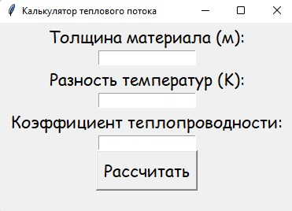

Программа является важным инструментом для инженеров, специалистов по теплоизоляции. Она позволяет предварительно определить эффективность теплоизоляционных материалов, выбрать оптимальную толщину материала и дать представление о необходимых характеристиках для достижения требуемых теплозащитных свойств. Программа компактная и простая, чтобы обеспечить быструю и удобную работу. Компактность позволит удобно использовать программу на различных устройствах, в том числе на мобильных телефонах и планшетах. Простой интерфейс делает программу доступной для широкого круга пользователей, включая специалистов с небольшим опытом в области расчетов теплопотока. Кроме того, простота использования поможет сэкономить время на подготовке и выполнении расчетов, что особенно важно в условиях интенсивных рабочих процессов и когда требуется оперативное принятие решений. Интуитивно понятный и легко настраиваемый интерфейс также помогает минимизировать вероятность ошибок ввода данных и повысить точность расчетов. Таким образом, компактная и простая программа для расчета теплового потока обеспечивает удобство использования, быструю работу и точность результатов, что делает её необходимой для специалистов в области теплоизоляции и проектирования инженерных систем.
Интерфейс программы
Если пользователь ошибется, то программа выдаст ошибку
Скачать программу Скачать на Android